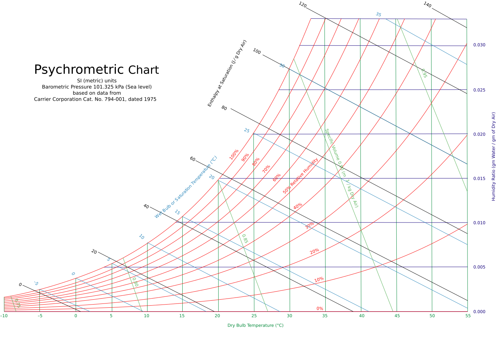

カタログ・設計値としては、どこにも欠点がない
数値の良し悪しと、壁内結露は別の問題

「Dry Bulb Temperature 20」の目盛りから、「50% Relative Humidity」の曲線をたどって、一番外側の「100%」線にぶつかる温度を見る
壁の中の腐朽は、住んでいて気づけない
クロス替えでは直せない構造の問題になっている
木材・コンクリートの水分を飛ばす時間が惜しまれがち
気密シートの小さな穴は、工程上そのまま塞がれることがある
薄いシートは、うっかり当たると穴が開きやすい
当たっても、簡単には破れない
基礎コンクリート・木材の水分（水蒸気）が逃げ場を失う
壁を閉じる前に、こもる湿気の元を減らせる
湿り空気線図（恐怖③・④スライドで使用）：Wikimedia Commons「File:PsychrometricChart.SeaLevel.SI.svg」（作成者ArthurOgawa、Creative Commons Attribution-ShareAlike 3.0ライセンス、要出典表示）。データ出典はCarrier Corporation Cat. No. 794-001（1975年）。LIFEX独自の作図ではなく、公開されている標準的な湿り空気線図をそのまま使用している
露点温度の計算例（20℃・湿度50%→約9.3℃）：露点温度の近似計算式（Magnus-Tetens近似式）による計算値。「室内20℃・湿度50%」は説明用の仮定条件で、実際の住宅の室内環境を測定した値ではない
執念②-4スライドの乾燥工程イメージ図（飽和線・結露ゾーンの簡略図）：上記とは別に、LIFEXの乾燥工程の効果を説明するためLIFEXのデザインで作成したオリジナルの概念図。実データに基づくグラフではなく、考え方を示す模式図
恐怖⑤スライドの「冷たいコップ」イラスト：LIFEXのデザインで作成したオリジナルのイラスト。商談の場で営業マンが手書きで再現できる簡易な例えとして追加（外部の湿り空気線図とは別物）
結露→腐朽→シロアリ被害の連鎖という一般的なメカニズム：建築分野で広く知られる壁体内結露の一般原理（Gハウス見学会説明資料等の一般解説部分と同種の内容）。具体的な発生率・被害件数の数字は本資料では使用していない
キラーフック①：気密シートの厚み約0.2mm、大工が長い木材を運搬中にうっかり当ててしまう事故を想定した設計思想：徳田さんの現場知見に基づく（2026-09-19〜20、[[project_lifex_dannetsu_kimitsu_kanki_kenshu]]参照）。LIFEX標準施工マニュアル第1版にはシートの厚みの数値記載は確認できておらず、未確認・出典が弱い状態。外部（加盟店様）への最終公開前に、正式な仕様書・部材規格での再確認を推奨
キラーフック②：上棟後、仮張りの床を一度剥がして乾燥させる工程：徳田さんの現場知見に基づく、LIFEX全体の実務（2026-09-19〜20確認）。標準施工マニュアル第1版には仮張り→本締めの記載はあるが、乾燥目的で意図的に剥がす工程の具体的な記載はなく、マニュアル外の実務知識という位置づけ
断熱等級6・UA値0.46・C値0.5という基本仕様：前回9/25研修「断熱×気密×換気」教科書・参考書に準拠（社内資料LIFEX公式初回セミナースライド20260521・LIFEX_話法マニュアル）